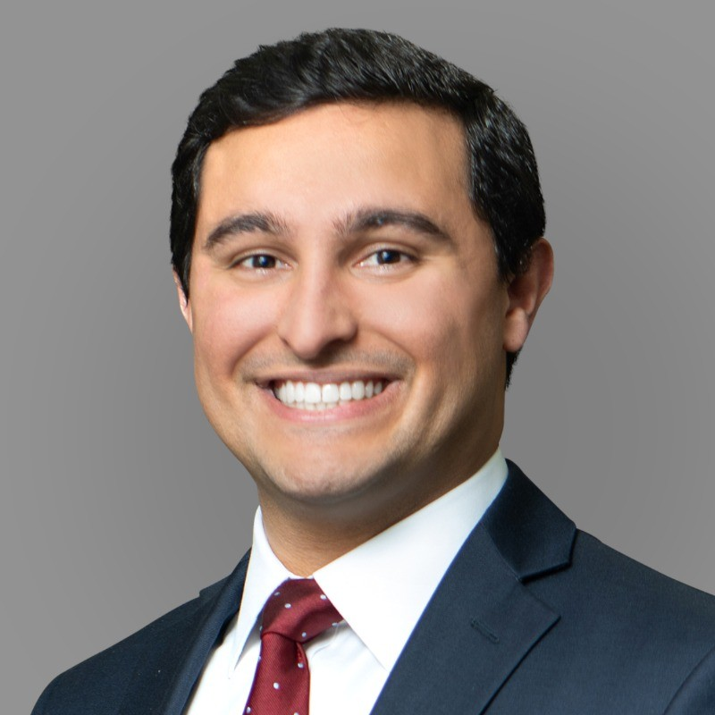

Player Details
Bio
The Numbers
Stats
Tournament & Match Play
Competition
Match Play Record
1-1-10.500 winning percentageBest Ball Record
1-3-00.250 winning percentageOverall Record
2-4-10.357 winning percentageTrend Line
Handicap History
Hardware
Trophy Case
No hardware yet. Bulletin-board material.